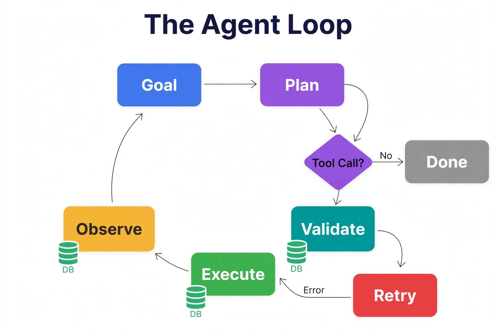

RAG answers questions; agents take actions. An AI agent is an LLM in a loop — observe, reason, act — where "act" means calling tools, and the most powerful tools query and mutate your database. This chapter covers the agent-database interface: designing tool functions over your schema, the execution loop with its safety rails, transactional action patterns, and the observability that makes agent behavior debuggable. The database is not just the agent's memory here — it is the agent's hands.
---
20.1 The Agent Loop

The ring is the whole agent: a Goal produces a Plan, the Tool Call diamond decides whether a database action is needed, and if so the call passes through Validate (are the arguments safe and well-formed?), Execute (run it against SQL Server), and Observe (read back rows or status) before replanning. The two exits matter most: “No” ends the loop with a final answer so the agent does not tool-call forever, and “Error” routes to Retry instead of crashing the run. The DB icons mark the three database touchpoints — notice planning and validation never touch data directly, which is what keeps a confused model from improvising SQL.
The loop's database touchpoints are validation (are the arguments sane?), execution (the stored procedure call), and observation (rows returned become the next prompt's context). Every iteration is logged — the agent's "thought process" is only debuggable if each tool call, its arguments, and its results are recorded.
---
20.2 Designing Tool Functions Over Your Schema
Tools are stored procedures with LLM-friendly contracts. Design rules:
lookup_order, not run_sql. Never give an agent raw SQL access — the tool surface is the security boundary (Chapter 37).@max_rows with a sane default. An agent that SELECTs a million rows blows the context window and the budget.@idempotency_key and returns the existing result on replay.-- Agent tool: look up orders with bounded, validated, tenant-scoped reads
CREATE OR ALTER PROCEDURE dbo.tool_lookup_orders
@tenant_id UNIQUEIDENTIFIER,
@user_id UNIQUEIDENTIFIER,
@status NVARCHAR(30) = NULL,
@since DATETIME2 = NULL,
@max_rows INT = 20,
@idempotency_key UNIQUEIDENTIFIER = NULL -- ignored for reads; required for writes
AS
BEGIN
SET NOCOUNT ON;
-- Validation the agent can understand and fix
IF @max_rows > 100
THROW 50010, 'max_rows cannot exceed 100. Narrow your filters instead.', 1;
IF @status IS NOT NULL AND @status NOT IN
(N'pending', N'shipped', N'delivered', N'cancelled', N'refunded')
THROW 50011, 'Unknown status. Valid: pending, shipped, delivered, cancelled, refunded.', 1;
SELECT TOP (@max_rows)
order_id, status, total_amount, created_at,
JSON_VALUE(metadata, '$.tracking_number') AS tracking_number
FROM dbo.orders
WHERE tenant_id = @tenant_id
AND user_id = @user_id
AND (@status IS NULL OR status = @status)
AND (@since IS NULL OR created_at >= @since)
ORDER BY created_at DESC;
END;
GO
-- Agent tool: issue a refund — mutating, idempotent, audited
CREATE OR ALTER PROCEDURE dbo.tool_issue_refund
@tenant_id UNIQUEIDENTIFIER,
@user_id UNIQUEIDENTIFIER,
@order_id UNIQUEIDENTIFIER,
@amount DECIMAL(12,2),
@reason NVARCHAR(500),
@idempotency_key UNIQUEIDENTIFIER
AS
BEGIN
SET NOCOUNT ON;
BEGIN TRAN;
-- Idempotency: replay returns the original result
IF EXISTS (SELECT 1 FROM dbo.agent_actions
WHERE idempotency_key = @idempotency_key)
BEGIN
SELECT action_id, status, result_summary
FROM dbo.agent_actions WHERE idempotency_key = @idempotency_key;
COMMIT; RETURN;
END
-- ... validate order ownership, amount <= refundable, etc. ...
-- ... perform refund, log to agent_actions with the idempotency key ...
COMMIT;
END;
GO---
20.3 The Agent Action Log
Every tool call is recorded — arguments, results, timing, and the agent run it belongs to. This table is the agent's flight recorder:
CREATE TABLE dbo.agent_runs (
run_id UNIQUEIDENTIFIER PRIMARY KEY DEFAULT NEWID(),
tenant_id UNIQUEIDENTIFIER NOT NULL,
user_id UNIQUEIDENTIFIER NOT NULL,
goal NVARCHAR(MAX) NOT NULL,
status NVARCHAR(20) NOT NULL DEFAULT N'running'
CONSTRAINT CK_ar_status CHECK (status IN
(N'running',N'completed',N'failed',N'awaiting_approval',N'cancelled')),
model NVARCHAR(100) NOT NULL,
started_at DATETIME2 NOT NULL DEFAULT SYSUTCDATETIME(),
ended_at DATETIME2 NULL
);
CREATE TABLE dbo.agent_actions (
action_id UNIQUEIDENTIFIER PRIMARY KEY DEFAULT NEWID(),
run_id UNIQUEIDENTIFIER NOT NULL
CONSTRAINT FK_aa_run REFERENCES dbo.agent_runs(run_id),
step_number INT NOT NULL,
tool_name NVARCHAR(200) NOT NULL,
arguments JSON NOT NULL,
result_summary NVARCHAR(MAX) NULL, -- truncated observation for the log
result_rows INT NULL,
status NVARCHAR(20) NOT NULL DEFAULT N'success'
CONSTRAINT CK_aa_status CHECK (status IN
(N'success',N'error',N'denied',N'timeout')),
error_message NVARCHAR(MAX) NULL,
idempotency_key UNIQUEIDENTIFIER NULL,
duration_ms INT NULL,
created_at DATETIME2 NOT NULL DEFAULT SYSUTCDATETIME(),
CONSTRAINT UQ_aa_idempotency UNIQUE (idempotency_key)
WHERE idempotency_key IS NOT NULL
);The action log serves three masters: debugging ("why did the agent refund twice?"), evaluation (replay runs against new prompts, Chapter 19), and compliance (who authorized what — paired with the approval workflow in §20.4).
---
20.4 Human Approval for Consequential Actions
Read tools run freely; write tools go through a policy gate. The three-tier policy:
awaiting_approval; a human approves via UI; the run resumes with the approval recorded.CREATE TABLE dbo.agent_approvals (
approval_id UNIQUEIDENTIFIER PRIMARY KEY DEFAULT NEWID(),
run_id UNIQUEIDENTIFIER NOT NULL,
action_id UNIQUEIDENTIFIER NOT NULL, -- the proposed action
proposed_at DATETIME2 NOT NULL DEFAULT SYSUTCDATETIME(),
decided_at DATETIME2 NULL,
decision NVARCHAR(20) NULL
CONSTRAINT CK_ap_decision CHECK (decision IN
(N'approved', N'rejected', N'expired')),
decided_by UNIQUEIDENTIFIER NULL, -- human user_id
expires_at DATETIME2 NOT NULL DEFAULT (DATEADD(hour, 4, SYSUTCDATETIME()))
);
-- The agent loop polls: approved → execute; rejected/expired → replan or stop.
-- Approval requests surface in the UI with full argument context.---
20.5 Transactional Action Patterns
Agent actions that touch multiple tables use the same transactional discipline as Chapter 1's endpoint — with one addition: the action log row is written in the same transaction as the action itself. If the action rolls back, its log entry rolls back too, and the agent sees the error as its observation. There is never a log entry claiming an action succeeded when it did not.
For multi-step workflows (book flight → charge card → send confirmation), use the saga pattern: each step is its own transaction with a compensating action recorded upfront. If step 3 fails, the agent executes the compensations for steps 1–2. The agent_actions table with its step numbers is the saga log — recovery is "replay uncompensated steps in reverse."
---
20.6 Tool Result Caching
Agents call the same tools with the same arguments repeatedly — the researcher re-runs a search it already ran, two agents query the same dashboard. Cache deterministic tool results keyed by (tool_name, argument hash) with short TTLs: search results for 5 minutes, database lookups for 1 minute, anything time-sensitive not at all. The cache lives in the result_cache table (§34.3) with the agent run as part of the key namespace, so cached results never leak across tenants or runs. Invalidate aggressively on writes: any successful write tool clears the cached reads for the affected tables. Measure the hit rate per tool — a search tool with a 40% hit rate just cut the agent's API bill nearly in half, and the caching code was twenty lines.
---